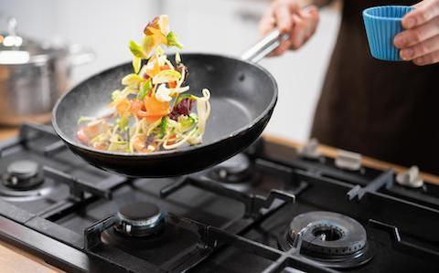

|  | Hi, I'm Daniel. I'm a seventh grader in Jane Lathrop Stanford middle school. I have a younger sister, a mom, and a dad. Named Ema, Anna, and Alex. My mom is head of marketing in a startup that makes chatbots, named Manychat and my dad is a COO in a restaurant, named Unfurl Kitchens. My sister is 10 and is turning eleven in April. We have a dog named Leo that we got about a year. In my free time, I like cooking and baking. Some of my favorite things to make are pappardelle bolognese, french onion soup, sourdough bread, and croissants. I also like playing on my oculus quest and Nintendo switch, some of my favorite games are Superhot VR, which is a game where time moves when you move, and another VR game called ultra wings which is a flying simulator, I also like Mario kart, and an open-world game called Hollow Knight. |